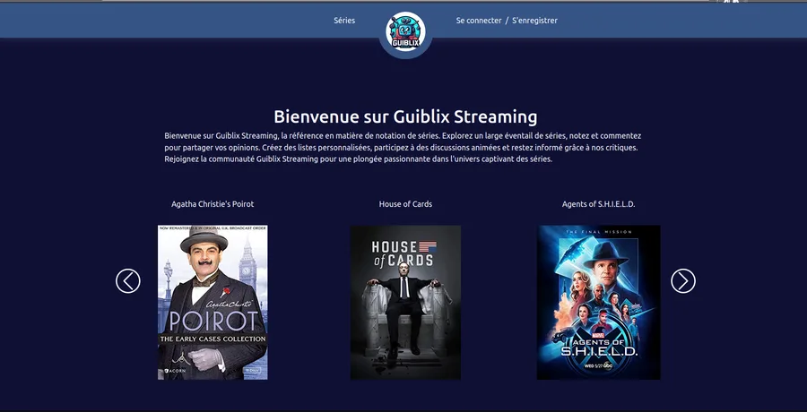
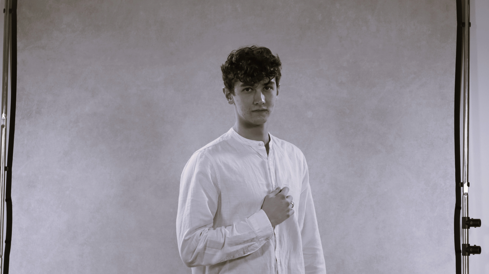
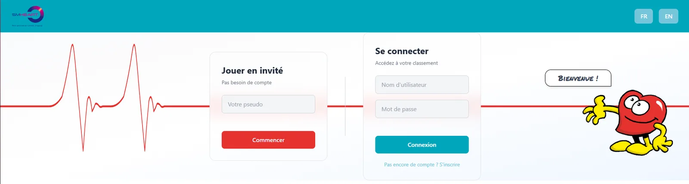
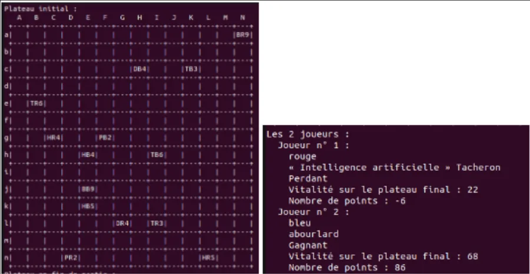
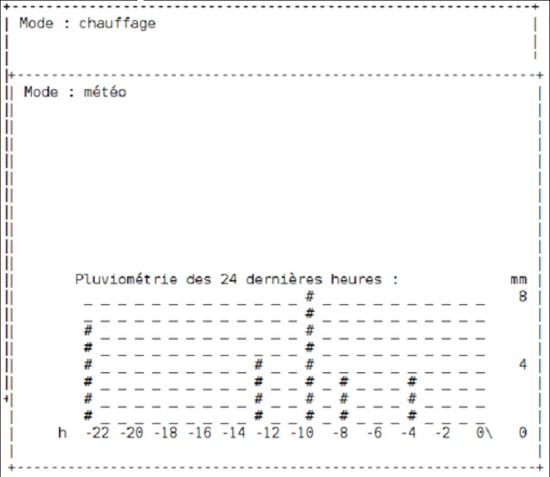
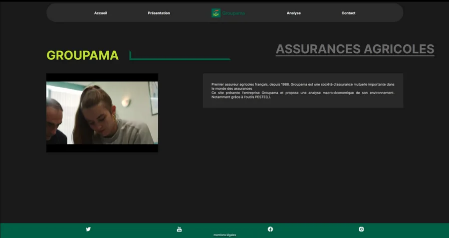
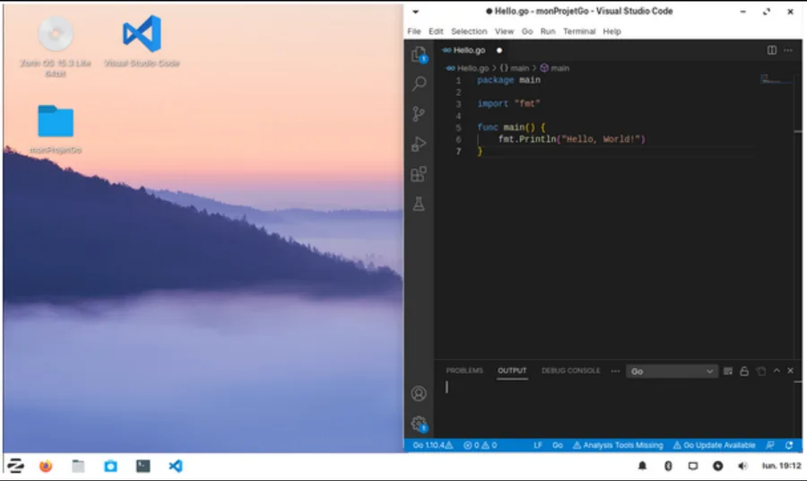

Guiblix
Un site de notation et de critique de séries, développé de zéro en équipe avec la méthode Scrum. J'y ai aussi coordonné le travail de l'équipe.
Retour d'expérience (PDF)Élève ingénieur en cognitique à l'ENSC, passé par un BUT Informatique. Je développe des applications web de bout en bout, de la base de données à l'interface, en partant de ce dont leurs utilisateurs ont besoin.

Projet phare, réalisé en stage à l'IHU Liryc à l'été 2026
Un serious game web où le grand public trace les contours du cœur sur de vraies IRM cardiaques. Chaque tracé est comparé à celui d'un cardiologue et à celui d'une IA, et alimente la recherche du projet européen ERC SMHEART.

Une première version existait en JavaScript et Node.js, mais elle était dépassée. Seul développeur sur le projet pendant 10 semaines, je l'ai entièrement reconstruite :
Le tracé du joueur devient un masque binaire, comparé au masque de référence du cardiologue avec le coefficient de Dice, la mesure standard en segmentation médicale :
Dice = 2 |A ∩ B||A| + |B|
Le score final pondère ce coefficient par le temps de tracé. Le même calcul appliqué à l'IA permet au joueur de se comparer à elle.
Le code source appartient à l'IHU Liryc et n'est pas public.
Alternance d'un an, pendant la 3ᵉ année de BUT
Un an comme développeur full-stack chez Communica, l'organisateur du salon Préventica. Sa plateforme preventica.com, refondue par un prestataire externe, accusait plus d'un an de retard : je suis arrivé dans la phase critique, à cinq mois d'une mise en ligne qui ne pouvait pas être repoussée.
Une petite équipe web, une hiérarchie directe et des livraisons fréquentes, sans intégration continue ni tests automatisés : chaque mise en production demandait des vérifications manuelles. J'ai couvert tout le cycle, du brief à la correction des anomalies remontées par les utilisateurs internes.
C'est là que j'ai appris à travailler sur une base de code héritée, dans l'urgence, sur un outil dont dépendait toute l'activité de l'entreprise.
Réalisés à l'IUT de Bordeaux, seul ou en équipe. Chaque projet a son retour d'expérience en PDF.

Un site de notation et de critique de séries, développé de zéro en équipe avec la méthode Scrum. J'y ai aussi coordonné le travail de l'équipe.
Retour d'expérience (PDF)
Les règles d'un jeu de plateau à coder au fil des semaines, puis une IA pour affronter celles des autres binômes lors d'un tournoi.
Retour d'expérience (PDF)
Une centrale météo domestique à compléter à partir d'un code existant, accompagnée d'un dossier de conception justifiant les choix algorithmiques.
Retour d'expérience (PDF)
Une analyse macro-économique de l'entreprise en équipe, rendue sous forme de rapport puis d'un site web pensé pour être lisible.
Retour d'expérience : site (PDF) Retour d'expérience : rapport (PDF)
Installer et configurer un poste de développement Linux sur machine virtuelle, du choix de l'OS aux outils, et documenter la démarche.
Retour d'expérience (PDF)Refonte de BEAT-AI pour le projet ERC SMHEART, sous la direction d'Aurélien Bustin.
École nationale supérieure de cognitique : informatique, sciences cognitives et conception centrée sur l'humain.
Un an sur preventica.com, le site du salon Préventica : mise en ligne, correctifs et nouvelles fonctionnalités en Symfony.
Classe internationale, option cybersécurité.
En dehors du code : sept ans de basket, la salle de sport, les jeux vidéo entre amis, les mangas et les séries.